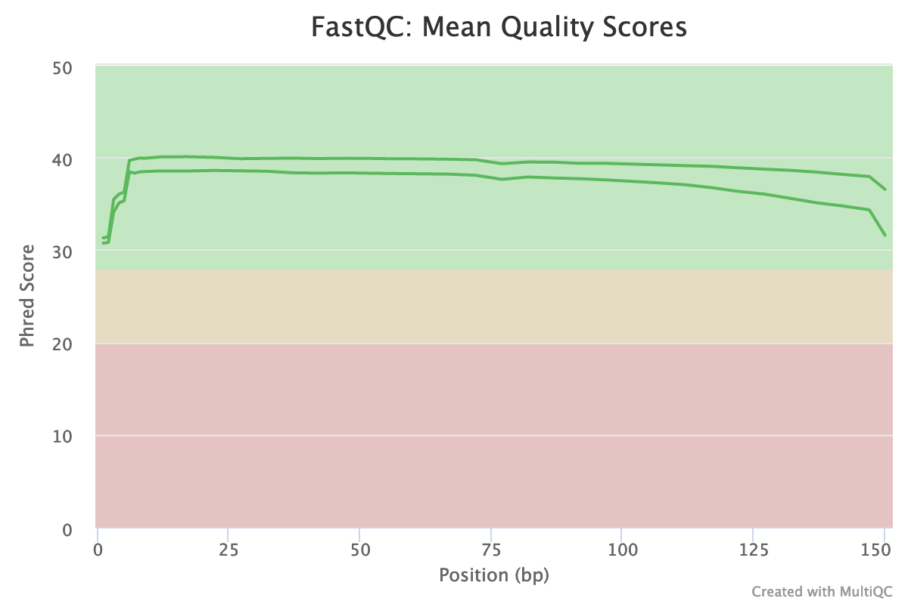
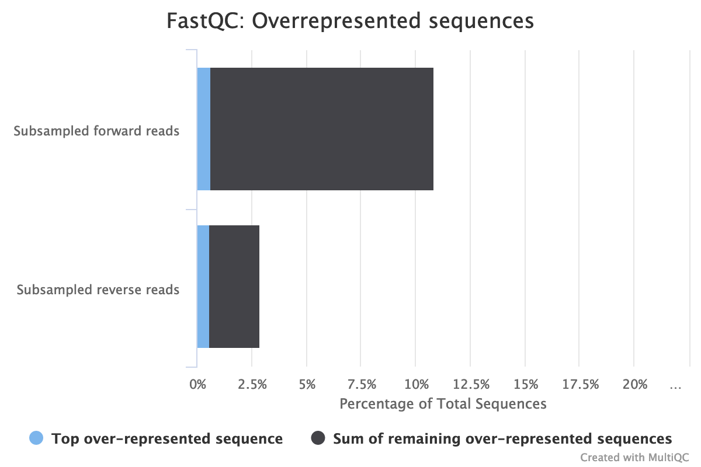
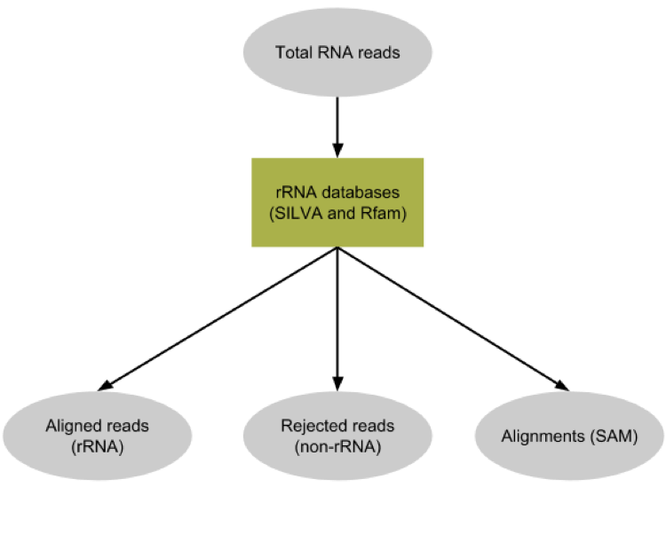

Metatranscriptomics analysis using microbiome RNA-seq data
 Pratik Jagtap
Pratik Jagtap Subina Mehta
Subina Mehta Ray Sajulga
Ray Sajulga Bérénice Batut
Bérénice Batut Emma Leith
Emma Leith Praveen Kumar
Praveen Kumar Saskia Hiltemann
Saskia HiltemannOverview
Questions:Objectives:
How to analyze metatranscriptomics data?
What information can be extracted of metatranscriptomics data?
How to assign taxa and function to the identified sequences?
Requirements:
Choose the best approach to analyze metatranscriptomics data
Understand the functional microbiome characterization using metatranscriptomic results
Understand where metatranscriptomics fits in ‘multi-omic’ analysis of microbiomes
Visualise a community structure
Time estimation: 5 hoursLevel: Introductory IntroductorySupporting Materials:Last modification: May 20, 2021
 Questions:
Questions:
Overview
In this tutorial we will perform a metatranscriptomics analysis based on the ASAIM workflow (Batut et al. 2018), using data from Kunath et al. 2018.
comment Note: Two versions of this tutorial
Because this tutorial consists of many steps, we have made two versions of it, one long and one short.
This is the extended version. We will run every tool manually and discuss the results in detail. If you would like to run through the tutorial a bit quicker and use workflows to run groups of analysis steps (e.g. data cleaning) at once, please see the shorter version of this tutorial
You can also switch between the long and short version at the start of any section.
Introduction
Microbiomes play a critical role in host health, disease, and the environment. The study of microbiota and microbial communities has been facilitated by the evolution of technologies, specifically the sequencing techniques. We can now study the microbiome dynamics by investigating the DNA content (metagenomics), RNA expression (metatranscriptomics), protein expression (metaproteomics) or small molecules (metabolomics):

New generations of sequencing platforms coupled to numerous bioinformatics tools have led to a spectacular technological progress in metagenomics and metatranscriptomics to investigate complex microorganism communities. These techniques are giving insight into taxonomic profiles and genomic components of microbial communities. Metagenomics is packed with information about the present taxonomies in a microbiome, but do not tell much about important functions. That is where metatranscriptomics and metaproteomics play a big part.

In this tutorial, we will focus on metatranscriptomics.
Metatranscriptomics analysis enables understanding of how the microbiome responds to the environment by studying the functional analysis of genes expressed by the microbiome. It can also estimate the taxonomic composition of the microbial population. It provides scientists with the confirmation of predicted open‐reading frames (ORFs) and potential identification of novel sites of transcription and/or translation from microbial genomes. Metatranscriptomics can enable more complete generation of protein sequences databases for metaproteomics.
To illustrate how to analyze metatranscriptomics data, we will use data from time-series analysis of a microbial community inside a bioreactor (Kunath et al. 2018). They generated metatranscriptomics data for 3 replicates over 7 time points. RNAs were enriched by rRNA depletion and treated with DNAse and library was prepared with the TruSeq stranded RNA sample preparation, which included the production of a cDNA library.
In this tutorial, we focus on biological replicate A of the 1st time point. In a follow-up tutorial we will illustrate how compare the results over the different time points and replicates. The input files used here are trimmed version of the original file for the purpose of saving time and resources.
To analyze the data, we will follow the ASaiM workflow and explain it step by step. ASaiM (Batut et al. 2018) is an open-source Galaxy-based workflow that enables microbiome analyses. Its workflow offers a streamlined Galaxy workflow for users to explore metagenomic/metatranscriptomic data in a reproducible and transparent environment. The ASaiM workflow has been updated by the GalaxyP team (University of Minnesota) to perform metatranscriptomics analysis of large microbial datasets.
The workflow described in this tutorial takes in paired-end datasets of raw shotgun sequences (in FastQ format) as an input and proceeds to:
- Preprocess
- Extract and analyze the community structure (taxonomic information)
- Extract and analyze the community functions (functional information)
- Combine taxonomic and functional information to offer insights into taxonomic contribution to a function or functions expressed by a particular taxonomy.
A graphical representation of the ASaiM workflow which we will be using today is given below:

comment Workflow also applicable to metagenomics data
The approach with the tools described here can also apply to metagenomics data. What will change are the quality control profiles and proportion of rRNA sequences.
Agenda
In this tutorial, we will cover:
Data upload
hands_on Hands-on: Data upload
Create a new history for this tutorial and give it a proper name
Tip: Creating a new history
Click the new-history icon at the top of the history panel.
If the new-history is missing:
- Click on the galaxy-gear icon (History options) on the top of the history panel
- Select the option Create New from the menu
Tip: Renaming a history
- Click on Unnamed history (or the current name of the history) (Click to rename history) at the top of your history panel
- Type the new name
- Press Enter
Import Tool: upload1
T1A_forwardandT1A_reversefrom Zenodo or from the data library (ask your instructor)https://zenodo.org/record/4776250/files/T1A_forward.fastqsanger https://zenodo.org/record/4776250/files/T1A_reverse.fastqsangerTip: Importing via links
- Copy the link location
Open the Galaxy Upload Manager (galaxy-upload on the top-right of the tool panel)
- Select Paste/Fetch Data
Paste the link into the text field
Press Start
Close the window
- By default, Galaxy uses the URL as the name, so rename the files with a more useful name.
Tip: Importing data from a data library
As an alternative to uploading the data from a URL or your computer, the files may also have been made available from a shared data library:
- Go into Shared data (top panel) then Data libraries
- Navigate to the correct folder as indicated by your instructor
- Select the desired files
- Click on the To History button near the top and select as Datasets from the dropdown menu
- In the pop-up window, select the history you want to import the files to (or create a new one)
- Click on Import
As default, Galaxy takes the link as name, so rename them.
Rename galaxy-pencil the files to
T1A_forwardandT1A_reverseTip: Renaming a dataset
- Click on the galaxy-pencil pencil icon for the dataset to edit its attributes
- In the central panel, change the Name field
- Click the Save button
Check that the datatype is
fastqsanger(e.g. notfastq). If it is not, please change the datatype tofastqsanger.Tip: Changing the datatype
- Click on the galaxy-pencil pencil icon for the dataset to edit its attributes
- In the central panel, click on the galaxy-chart-select-data Datatypes tab on the top
- Select
fastqsanger- Click the Save button
Preprocessing
exchange Switch to short tutorial
Quality control
During sequencing, errors are introduced, such as incorrect nucleotides being called. These are due to the technical limitations of each sequencing platform. Sequencing errors might bias the analysis and can lead to a misinterpretation of the data.
Sequence quality control is therefore an essential first step in your analysis. In this tutorial we use similar tools as described in the tutorial “Quality control”:
- FastQC generates a web report that will aid you in assessing the quality of your data
- MultiQC combines multiple FastQC reports into a single overview report
- Cutadapt for trimming and filtering
hands_on Hands-on: Quality control
- FastQC Tool: toolshed.g2.bx.psu.edu/repos/devteam/fastqc/fastqc/0.72+galaxy1 with the following parameters:
- param-files “Short read data from your current history”: both
T1A_forwardandT1A_reversedatasets selected with Multiple datasetsTip: Select multiple datasets
- Click on param-files Multiple datasets
- Select several files by keeping the Ctrl (orCOMMAND) key pressed and clicking on the files of interest
Inspect the webpage output of FastQC tool for the
T1A_forwarddatasetquestion Questions
What is the read length?
solution Solution
The read length is 151 bp.
- MultiQC Tool: toolshed.g2.bx.psu.edu/repos/iuc/multiqc/multiqc/1.7 with the following parameters to aggregate the FastQC reports:
- In “Results”
- “Which tool was used generate logs?”:
FastQC- In “FastQC output”
- “Type of FastQC output?”:
Raw data- param-files “FastQC output”: both
Raw datafiles (outputs of FastQC tool)- Inspect the webpage output from MultiQC for each FASTQ
For more information about how to interpret the plots generated by FastQC and MultiQC, please see this section in our dedicated Quality Control Tutorial.
question Questions
Inspect the webpage output from MultiQC
- How many sequences does each file have?
- How is the quality score over the reads? And the mean score?
- Is there any bias in base content?
- How is the GC content?
- Are there any unindentified bases?
- Are there duplicated sequences?
- Are there over-represented sequences?
- Are there still some adapters left?
- What should we do next?
solution Solution
- Both files have 260,554 sequences
The “Per base sequence quality” is globally good: the quality stays around 40 over the reads, with just a slight decrease at the end (but still higher than 35)

The reverse reads have a slight worst quality than the forward, a usual case in Illumina sequencing.
The distribution of the mean quality score is almost at the maximum for the forward and reverse reads:
For both forward and reverse reads, the percentage of A, T, C, G over sequence length is biased. As for any RNA-seq data or more generally libraries produced by priming using random hexamers, the first 10-12 bases have an intrinsic bias.
We could also see that after these first bases the distinction between C-G and A-T groups is not clear as expected. It explains the error raised by FastQC.
With sequences from random position of a genome, we expect a normal distribution of the %GC of reads around the mean %GC of the genome. Here, we have RNA reads from various genomes. We do not expect a normal distribution of the %GC. Indeed, for the forward reads, the distribution shows with several peaks: maybe corresponding to mean %GC of different organisms.
Almost no N were found in the reads: so almost no unindentified bases
The forward reads seem to have more duplicated reads than the reverse reads with a rate of duplication up to 60% and some reads identified over 10 times.

In data from RNA (metatranscriptomics data), duplicated reads are expected. The low rate of duplication in reverse reads could be due to bad quality: some nucleotides may have been wrongly identified, altering the reads and reducing the duplication.
The high rate of overrepresented sequences in the forward reads is linked to the high rate of duplication.

Illumina universal adapters are still present in the reads, especially at the 3’ end.
- After checking what is wrong, we should think about the errors reported by FastQC: they may come from the type of sequencing or what we sequenced (check the “Quality control” training: FastQC for more details): some like the duplication rate or the base content biases are due to the RNA sequencing. However, despite these challenges, we can still get slightly better sequences for the downstream analyses.


Even though our data is already of pretty high quality, we can improve it even more by:
- Trimming reads to remove bases that were sequenced with low certainty (= low-quality bases) at the ends of the reads
- Removing reads of overall bad quality.
- Removing reads that are too short to be informative in downstream analysis
question Questions
What are the possible tools to perform such functions?
solution Solution
There are many tools such as Cutadapt, Trimmomatic, Trim Galore, Clip, trim putative adapter sequences. etc. We choose here Cutadapt because it is error tolerant, it is fast and the version is pretty stable.
There are several tools out there that can perform these steps, but in this analysis we use Cutadapt (Martin 2011).
Cutadapt also helps find and remove adapter sequences, primers, poly-A tails and/or other unwanted sequences from the input FASTQ files. It trims the input reads by finding the adapter or primer sequences in an error-tolerant way. Additional features include modifying and filtering reads.
hands_on Hands-on: Read trimming and filtering
- Cutadapt Tool: toolshed.g2.bx.psu.edu/repos/lparsons/cutadapt/cutadapt/1.16.5 with the following parameters to trim low quality sequences:
- “Single-end or Paired-end reads?”:
Paired-end
- param-files “FASTQ/A file #1”:
T1A_forward- param-files “FASTQ/A file #2”:
T1A_reverseThe order is important here!
- In “Filter Options”
- “Minimum length”:
150- In “Read Modification Options”
- “Quality cutoff”:
20- In “Output Options”
- “Report”:
Yesquestion Questions
Why do we run the trimming tool only once on a paired-end dataset and not twice, once for each dataset?
solution Solution
The tool can remove sequences if they become too short during the trimming process. For paired-end files it removes entire sequence pairs if one (or both) of the two reads became shorter than the set length cutoff. Reads of a read-pair that are longer than a given threshold but for which the partner read has become too short can optionally be written out to single-end files. This ensures that the information of a read pair is not lost entirely if only one read is of good quality.
- Rename galaxy-pencil
Read 1 outputtoQC controlled forward readsRead 2 outputtoQC controlled reverse reads
Cutadapt tool outputs a report file containing some information about the trimming and filtering it performed.
question Questions
Inspect the output report from Cutadapt tool.
- How many basepairs has been removed from the forwards reads because of bad quality? And from the reverse reads?
- How many sequence pairs have been removed because at least one read was shorter than the length cutoff?
solution Solution
- 203,654 bp has been trimmed for the forward read (read 1) and 569,653 bp bp on the reverse (read 2). It is not a surprise: we saw that at the end of the sequences the quality was dropping more for the reverse reads than for the forward reads.
- 27,677 (10.6%) reads were too short after trimming and then filtered.
Ribosomal RNA fragments filtering
Metatranscriptomics sequencing targets any RNA in a pool of micro-organisms. The highest proportion of the RNA sequences in any organism will be ribosomal RNAs.
These rRNAs are useful for the taxonomic assignment (i.e. which organisms are found) but they do not provide any functional information, (i.e. which genes are expressed) To make the downstream functional annotation faster, we will sort the rRNA sequences using SortMeRNA (Kopylova et al. 2012). It can handle large RNA databases and sort out all fragments matching to the database with high accuracy and specificity:

hands_on Hands-on: Ribosomal RNA fragments filtering
- Filter with SortMeRNA Tool: toolshed.g2.bx.psu.edu/repos/rnateam/sortmerna/bg_sortmerna/2.1b.6 with the following parameters:
- “Sequencing type”:
Reads are paired
- param-file “Forward reads”:
QC controlled forward reads(output of Cutadapt tool)- param-file “Reverse reads”:
QC controlled reverse reads(output of Cutadapt tool)- “If one of the paired-end reads aligns and the other one does not”:
Output both reads to rejected file (--paired_out)- “Databases to query”:
Public pre-indexed ribosomal databases
- “rRNA databases”: param-check Select all
- param-check
rfam-5s-database-id98- param-check
silva-arc-23s-id98- param-check
silva-euk-28s-id98- param-check
silva-bac-23s-id98- param-check
silva-euk-18s-id95- param-check
silva-bac-16s-id90- param-check
rfam-5.8s-database-id98- param-check
silva-arc-16s-id95- “Include aligned reads in FASTA/FASTQ format?”:
Yes (--fastx)
- “Include rejected reads file?”:
Yes- “Generate statistics file”:
YesExpand the aligned and unaligned forward reads datasets in the history
question Questions
How many sequences have been identified as rRNA and non rRNA?
solution Solution
Aligned forward read file has 1,947 sequences and the unaligned 2,858 sequences. Then 1,947 reads have been identified as rRNA and 2,858 as non rRNA. The numbers are the same for the reverse reads.
SortMeRNA tool removes any reads identified as rRNA from our dataset, and outputs a log file with more information about this filtering.
question Questions
Inspect the log output from SortMeRNA tool, and scroll down to the
Resultssection.
- How many reads have been processed?
- How many reads have been identified as rRNA given the log file?
- Which type of rRNA are identified? Which organisms are we then expected to identify?
solution Solution
465,754 reads are processed: 232,877 for forward and 232,877 for reverse (given the Cutadapt report)
Out of the 465,754 reads, 119,646 (26%) have passed the e-value threshold and are identified as rRNA.
The proportion of rRNA sequences is then quite high (around 40%), compared to metagenomics data where usually they represent < 1% of the sequences. Indeed there are only few copies of rRNA genes in genomes, but they are expressed a lot for the cells.
Some of the aligned reads are forward (resp. reverse) reads but the corresponding reverse (resp. forward) reads are not aligned. As we choose “If one of the paired-end reads aligns and the other one does not”:
Output both reads to rejected file (--paired_out), if one read in a pair does not align, both go to unaligned.The 20.56% rRNA reads are 23S bacterial rRNA, 2.34% 16S bacterial rRNA and 1.74% 18S eukaryotic rRNA. We then expect to identify mostly bacteria but also probably some archae (18S eukaryotic rRNA).
Interlace forward and reverse reads
The tool for functional annotations needs a single file as input, even with paired-end data.
We need to join the two separate files (forward and reverse) to create a single interleaced file, using FASTQ interlacer, in which the forward reads have /1 in their id and reverse reads /2. The join is performed using sequence identifiers (headers), allowing the two files to contain differing ordering. If a sequence identifier does not appear in both files, it is output in a separate file named singles.
We use FASTQ interlacer on the unaligned (non-rRNA) reads from SortMeRNA to prepare for the functional analysis.
hands_on Hands-on: Interlace FastQ files
- FASTQ interlacer Tool: toolshed.g2.bx.psu.edu/repos/devteam/fastq_paired_end_interlacer/fastq_paired_end_interlacer/1.2.0.1+galaxy0 with the following parameters:
- “Type of paired-end datasets”:
2 separate datasets
- param-file “Left-hand mates”:
Unaligned forward reads(output of SortMeRNA tool)- param-file “Right-hand mates”:
Unaligned reverse reads(output of SortMeRNA tool)- Rename galaxy-pencil the pair output to
Interlaced non rRNA reads
Extraction of the community profile
exchange Switch to short tutorial
The first important information to get from microbiome data is the community structure: which organisms are present and in which abundance. This is called taxonomic profiling.
Different approaches can be used:
-
Identification and classification of OTUs, as used in amplicon data
Such an approach first requires sequence sorting to extract only the 16S and 18S sequences (e.g. using the aligned reads from SortMeRNA), then again using the same tools as for amplicon data (as explained in tutorials like 16S Microbial Analysis with mothur or 16S Microbial analysis with Nanopore data).
However, because rRNA sequences represent less than 50% of the raw sequences, this approach is not the most statistically supported.
-
Assignment of taxonomy on the whole sequences using databases with marker genes
In this tutorial, we follow second approach using MetaPhlAn (Truong et al. 2015). This tool uses a database of ~1M unique clade-specific marker genes (not only the rRNA genes) identified from ~17,000 reference (bacterial, archeal, viral and eukaryotic) genomes.
As rRNAs reads are good marker genes, we will use directly the quality controlled files (output of Cutadapt) with all reads (not only the non rRNAs).
hands_on Hands-on: Extract the community structure
- MetaPhlAn Tool: toolshed.g2.bx.psu.edu/repos/iuc/metaphlan/metaphlan/3.0.8+galaxy0 with the following parameters:
- In “Input(s)”
- “Input(s)”:
Fasta/FastQ file(s) with metagenomic reads
- “Fasta/FastQ file(s) with metagenomic reads”:
Paired-end files
- param-file “Forward paired-end Fasta/FastQ file with metagenomic reads”:
QC controlled forward reads(output of Cutadapt tool)- param-file “Reverse paired-end Fasta/FastQ file with metagenomic reads”:
QC controlled reverse reads(outputs of Cutadapt tool)- “Database with clade-specific marker genes”:
Locally cached
- “Cached database with clade-specific marker genes”:
MetaPhlAn clade-specific marker genes (mpa_v30_CHOCOPhlAn_201901)- In “Analysis”
- “Type of analysis to perform”:
rel_ab: Profiling a metagenomes in terms of relative abundances
- “Taxonomic level for the relative abundance output”:
All taxonomic levels- *“Generate a report for each taxonomic level?”:
Yes- “Quantile value for the robust average”:
0.1- “Organisms to profile”:
- param-check
Profile viral organisms (add_viruses)- In “Output”
- “Output for Krona”:
Yes
This step may take a couple of minutes as each sequence is compare to the full database with ~1 million reference sequences.
5 files and a collection are generated by MetaPhlAn tool:
-
The main output: A tabular file called
Predicted taxon relative abundanceswith the *community profile#mpa_v30_CHOCOPhlAn_201901 # .... #SampleID Metaphlan_Analysis #clade_name NCBI_tax_id relative_abundance additional_species k__Bacteria 2 99.40284 k__Archaea 2157 0.59716 k__Bacteria|p__Firmicutes 2|1239 94.67418 k__Bacteria|p__Coprothermobacterota 2|2138240 4.72866 k__Archaea|p__Euryarchaeota 2157|28890 0.59716 k__Bacteria|p__Firmicutes|c__Clostridia 2|1239|186801 94.67418 k__Bacteria|p__Coprothermobacterota|c__Coprothermobacteria 2|2138240|2138243 4.72866 k__Archaea|p__Euryarchaeota|c__MethanobacteriaEach line contains 4 columns:
- the lineage with different taxonomic levels
- the previous lineage with NCBI taxon id
- the relative abundance found for our sample for the lineage
- any additional species
The file starts with high level taxa (kingdom:
k__) and go to more precise taxa.question Questions
Inspect the
Predicted taxon relative abundancesfile output by MetaPhlAn tool- How many taxons have been identified?
- What are the different taxonomic levels we have access to with MetaPhlAn?
- What genus and species are found in our sample?
- Has only bacteria been identified in our sample?
solution Solution
- The file has 20 lines, including an header. Therefore, 17 taxons of different levels have been identified
- We have access: kingdom (
k__), phylum (p__), class (c__), order (o__), family (f__), genus (g__), species (s__), strain (t__) - In our sample, we identified:
- 3 genera: Coprothermobacter, Methanothermobacter, Hungateiclostridium
- 3 species: Coprothermobacter proteolyticus, Methanothermobacter thermautotrophicus, Hungateiclostridium thermocellum
- As expected from the rRNA sorting, we have some archaea, Methanobacteria, in our sample.
- A collection with the same information as in the tabular file but splitted into different files, one per taxonomic level
- A tabular file called
Predicted taxon relative abundances for Kronawith the same information as the previous file but formatted for visualization using Krona. We will use this file later -
A BIOM file with the same information as the previous file but in BIOM format
BIOM format is quite common in microbiomics. This is standard, for example, as the input for tools like mothur or QIIME.
- A SAM file with the results of the sequence mapping on the reference database.
- A tabular file called
Bowtie2 outputwith similar information as the one in the SAM file
comment Note: Analyzing an isolated metatranscriptome
We are analyzing our RNA reads as we would do for DNA reads. This approach has one main caveat. In MetaPhlAn, the species are quantified based on the recruitment of reads to species-specific marker genes. In metagenomic data, each genome copy is assumed to donate ~1 copy of each marker. But the same assumption cannot be made for RNA data: markers may be transcribed more or less within a given species in this sample compared to the average transcription rate. A species will still be detected in the metatranscriptomic data as long as a non-trivial fraction of the species’ markers is expressed.
We should then carefully interpret the species relative abundance. These values reflect species’ relative contributions to the pool of species-specific transcripts and not the overall transcript pool.
Some downstream tools need the MetaPhlAn table with predicted taxon abundance with only 2 columns: the lineage and the abundance.
hands_on Hands-on: Format taxon relative abundances table
- Cut Tool: Cut1 with the following parameters:
- “Cut columns”:
c1,c3- param-file “From”:
Predicted taxon relative abundances(output of MetaPhlAn)- Rename
Cut predicted taxon relative abundances table
Community structure visualization
Even if the output of MetaPhlAn can be easy to parse, we want to visualize and explore the community structure. 2 tools can be used there:
- Krona for an interactive HTML output
- Graphlan for a publication ready visualization
hands_on Hands-on: Interactive community structure visualization with KRONA
- Krona pie chart Tool: toolshed.g2.bx.psu.edu/repos/crs4/taxonomy_krona_chart/taxonomy_krona_chart/2.7.1+galaxy0 with
- “What is the type of your input data”:
Tabular
- param-file “Input file”:
Predicted taxon relative abundances for Krona(output of MetaPhlAn)
Krona Ondov et al. 2011 renders results of a metagenomic profiling as a zoomable pie chart. It allows hierarchical data, here taxonomic levels, to be explored with zooming, multi-layered pie charts
question Questions
Inspect the output from Krona tool. (The interactive plot is also shown below)
- What are the abundances of 2 kingdoms identified here?
- When zooming on Bacteria, what are the 2 subclasses identified?
solution Solution
Archaea represents 0.6% so bacteria are 99.4% of the organisms identified in our sample
5% of bacteria are Coprothermobacter proteolyticus and the rest Hungateiclostridium thermocellum .


GraPhlAn is another software tool for producing high-quality circular representations of taxonomic and phylogenetic trees.
It takes a taxonomic tree file as the input. We first need to convert the MetaPhlAn output using Export to GraPhlAn. This conversion software tool produces both annotation and tree file for GraPhlAn.
hands_on Hands-on: Publication-ready community structure visualization with GraPhlAn
- Export to GraPhlAn Tool: toolshed.g2.bx.psu.edu/repos/iuc/export2graphlan/export2graphlan/0.20+galaxy0 with the following parameters:
- param-file “Input file”:
Cut predicted taxon relative abundances table- “List which levels should be annotated in the tree”:
1,2- “List which levels should use the external legend for the annotation”:
3,4,5- “List which levels should be highlight with a shaded background”:
1- Generation, personalization and annotation of tree Tool: toolshed.g2.bx.psu.edu/repos/iuc/graphlan_annotate/graphlan_annotate/1.0.0.0 with the following parameters:
- param-file “Input tree”:
Tree(output of Export to GraPhlAn)- param-file “Annotation file”:
Annotation(output of Export to GraPhlAn)- GraPhlAn Tool: toolshed.g2.bx.psu.edu/repos/iuc/graphlan/graphlan/1.0.0.0 with the following parameters:
- param-file “Input tree”:
Tree in PhyloXML- “Output format”:
PNG- Inspect GraPhlAn output

Extract the functional information
exchange Switch to short tutorial
We would now like to answer the question “What are the micro-organisms doing?” or “Which functions are performed by the micro-organisms in the environment?”.
In the metatranscriptomics data, we have access to the genes that are expressed by the community. We can use that to identify genes, their functions, and build pathways, etc., to investigate their contribution to the community using HUMAnN (Franzosa et al. 2018). HUMAnN is a pipeline developed for efficiently and accurately profiling the presence/absence and abundance of microbial pathways in a community from metagenomic or metatranscriptomic sequencing data.
To identify the functions made by the community, we do not need the rRNA sequences, specially because they had noise and will slow the run. We will then use the output of SortMeRNA, but also the identified community profile from MetaPhlAn. This will help HUMAnN to focus on the know sequences for the identified organisms.
hands_on Hands-on: Extract the functional information
- HUMAnN Tool: toolshed.g2.bx.psu.edu/repos/iuc/humann/humann/3.0.0+galaxy1 with the following parameters:
- “Input(s)”:
Quality-controlled shotgun sequencing reads (metagenome (DNA reads) or metatranscriptome (RNA reads))
- param-file “Quality-controlled shotgun sequencing reads (metagenome (DNA reads) or metatranscriptome (RNA reads))”:
Interlaced non rRNA reads- “Steps”:
Bypass the taxonomic profiling step and creates a custom ChocoPhlAn database of the species provided afterwards
- param-file“Taxonomic profile file”:
Predicted taxon relative abundances(output of MetaPhlAn tool)- In “Nucleotide search / Mapping reads to community pangenomes”
- “Nucleotide database”:
Locally cached
- “Nucleotide database”:
Full ChocoPhlAn for HUMAnN- In “Translated search / Aligning unmapped reads to a protein database”
- “Protein database”:
Locally cached
- “Protein database”:
Full UniRef90 for HUMAnN
tip Tip: Running low on time? Import the HUMAnN outputs
Import the 2 files:
https://zenodo.org/record/4776250/files/T1A_HUMAnN_Gene_families_and_their_abundance.tabular https://zenodo.org/record/4776250/files/T1A_HUMAnN_Pathways_and_their_abundance.tabular
HUMAnN tool generates 4 files:
-
A tabular file with the gene families and their abundance:
# Gene Family humann_Abundance-RPKs UNMAPPED 98294.0000000000 UniRef90_A3DCI4 42213.2661898446 UniRef90_A3DCI4|g__Hungateiclostridium.s__Hungateiclostridium_thermocellum 42205.5707425926 UniRef90_A3DCI4|unclassified 7.6954472520 UniRef90_A3DCB9 39273.2031556915 UniRef90_A3DCB9|g__Hungateiclostridium.s__Hungateiclostridium_thermocellum 39273.2031556915This file details the abundance of each gene family in the community. Gene families are groups of evolutionarily-related protein-coding sequences that often perform similar functions. Here we used UniRef90 gene families: sequences in a gene families have at least 50% sequence identity.
Gene family abundance at the community level is stratified to show the contributions from known and unknown species. Individual species’ abundance contributions sum to the community total abundance.
Gene family abundance is reported in RPK (reads per kilobase) units to normalize for gene length. It reflects the relative gene (or transcript) copy number in the community.
The “UNMAPPED” value is the total number of reads which remain unmapped after both alignment steps (nucleotide and translated search). Since other gene features in the table are quantified in RPK units, “UNMAPPED” can be interpreted as a single unknown gene of length 1 kilobase recruiting all reads that failed to map to known sequences.
question Questions
Inspect the
Gene families and their abundancesfile from HUMAnN tool- What is the most abundant family?
- Which species is involved in production of this family?
- How many gene families have been identified?
solution Solution
- The most abundant family is the first one in the family: UniRef90_A3DCI4. We can use the tool Rename features of a HUMAnN generated table Tool: toolshed.g2.bx.psu.edu/repos/iuc/humann_rename_table/humann_rename_table/3.0.0+galaxy1 to add extra information about the gene family.
- Beta-lactamase TEM seems mostly produced here by Hungateiclostridium thermocellum.
-
There is 6,374 lines in gene family file. But some of the gene families have multiple lines when the involved species are known.
To know the number of gene families, we need to remove all lines with the species information, i.e. lines with
|in them using the tool Split a HUMAnN table Tool: toolshed.g2.bx.psu.edu/repos/iuc/humann_split_stratified_table/humann_split_stratified_table/3.0.0+galaxy1The tool generates 2 output file:
- a stratified table with all lines with
|in them - a unstratied table with all lines without
|in them
In the unstratified table, there are 3,175 lines, so 3,174 gene families.
- a stratified table with all lines with
-
A tabular file with the pathways and their abundance:
# Pathway humann_Abundance UNMAPPED 21383.0328532606 UNINTEGRATED 123278.2617863865 UNINTEGRATED|g__Hungateiclostridium.s__Hungateiclostridium_thermocellum 114029.8324087679 UNINTEGRATED|unclassified 6301.1699240597 UNINTEGRATED|g__Coprothermobacter.s__Coprothermobacter_proteolyticus 5407.2826151090 PWY-6609: adenine and adenosine salvage III 285.7955913866 PWY-6609: adenine and adenosine salvage III|g__Hungateiclostridium.s__Hungateiclostridium_thermocellum 66.3688569288 PWY-1042: glycolysis IV 194.7465938041This file shows each pathway and their abundance. Here, we used the MetaCyc Metabolic Pathway Database, a curated database of experimentally elucidated metabolic pathways from all domains of life.
The abundance of a pathway in the sample is computed as a function of the abundances of the pathway’s component reactions, with each reaction’s abundance computed as the sum over abundances of genes catalyzing the reaction. The abundance is proportional to the number of complete “copies” of the pathway in the community. Indeed, for a simple linear pathway
RXN1 --> RXN2 --> RXN3 --> RXN4, if RXN1 is 10 times as abundant as RXNs 2-4, the pathway abundance will be driven by the abundances of RXNs 2-4.The pathway abundance is computed once for all species (community level) and again for each species using species gene abundances along the components of the pathway. Unlike gene abundance, a pathway’s abundance at community-level is not necessarily the sum of the abundance values of each species. For example, for the same pathway example as above, if the abundances of RXNs 1-4 are [5, 5, 10, 10] in Species A and [10, 10, 5, 5] in Species B, the pathway abundance would be 5 for Species A and Species B, but 15 at the community level as the reaction totals are [15, 15, 15, 15].
question Questions
View the
Pathways and their abundanceoutput from HUMAnN tool- What is the most abundant pathway?
- Which species is involved in production of this pathway?
- How many gene families have been identified?
- What is the “UNINTEGRATED” abundance?
solution Solution
- The most abundant pathway is PWY-6609. It produces the adenine and adenosine salvage III.
- Like the gene family, this pathway is mostly achieved by Hungateiclostridium thermocellum.
-
There are 118 lines in the pathway file, including the lines with species information. To compute the number of gene families, we need to apply a similar approach as for the gene families by removing the lines with
|in them using the tool Split a HUMAnN table Tool: toolshed.g2.bx.psu.edu/repos/iuc/humann_split_stratified_table/humann_split_stratified_table/3.0.0+galaxy1 . The unstratified output file has 64 lines, including the header, UNMAPPED and UNINTEGRATED. Therefore, 61 MetaCyc pathways have been identified for our sample. - The “UNINTEGRATED” abundance corresponds to the total abundance of genes in the different levels that do not contribute to any pathways.
-
A file with the pathways and their coverage:
Pathway coverage provides an alternative description of the presence (1) and absence (0) of pathways in a community, independent of their quantitative abundance.
-
A log file
comment Note: Analyzing an isolated metatranscriptome
As we already mentioned above, we are analyzing our RNA reads as we would do for DNA reads and therefore we should be careful when interpreting the results. We already mentioned the analysis of the species’ relative abundance from MetaPhlAn, but there is another aspect we should be careful about.
From a lone metatranscriptomic dataset, the transcript abundance can be confounded with the underlying gene copy number. For example, transcript X may be more abundant in sample A relative to sample B because the underlying X gene (same number in both samples) is more highly expressed in sample A relative to sample B; or there are more copies of gene X in sample A relative to sample B (all of which are equally expressed). This is a general challenge in analyzing isolated metatranscriptomes.
The best approach would be to combine the metatranscriptomic analysis with a metagenomic analysis. In this case, rather than running MetaPhlAn on the metatranscriptomic data, we run it on the metagenomic data and use the taxonomic profile as input to HUMAnN. RNA reads are then mapped to any species’ pangenomes detected in the metagenome. Then we run HUMAnN on both metagenomics and metatranscriptomic data. We can use both outputs to normalize the RNA-level outputs (e.g. transcript family abundance) by corresponding DNA-level outputs to the quantification of microbial expression independent of gene copy number.
Here we do not have a metagenomic dataset to combine with and need to be careful in our interpretation
Normalize the abundances
Gene family and pathway abundances are in RPKs (reads per kilobase), accounting for gene length but not sample sequencing depth. While there are some applications, e.g. strain profiling, where RPK units are superior to depth-normalized units, most of the time we need to renormalize our samples prior to downstream analysis.
hands_on Hands-on: Normalize the gene family abundances
- Renormalize a HUMAnN generated table Tool: toolshed.g2.bx.psu.edu/repos/iuc/humann_renorm_table/humann_renorm_table/3.0.0+galaxy1 with
- “Gene/pathway table”:
Gene families and their abundance(output of HUMAnN)- “Normalization scheme”:
Relative abundance- “Normalization level”:
Normalization of all levels by community total- Rename galaxy-pencil the generated file
Normalized gene families
question Questions
Inspect galaxy-eye the
Normalized gene familiesfile
- What percentage of sequences has not been assigned to a gene family?
- What is the relative abundance of the most abundant gene family?
solution Solution
- 14% (
0.14438 x 100) of the sequences have not be assigned to a gene family- The UniRef90_A3DCI4 family represents 6% of the reads.
Let’s do the same for the pathway abundances.
hands_on Hands-on: Normalize the pathway abundances
- Renormalize a HUMAnN generated table Tool: toolshed.g2.bx.psu.edu/repos/iuc/humann_renorm_table/humann_renorm_table/3.0.0+galaxy1 with
- “Gene/pathway table”:
Pathways and their abundance(output of HUMAnN)- “Normalization scheme”:
Relative abundance- “Normalization level”:
Normalization of all levels by community total- Rename galaxy-pencil the generated file
Normalized pathways
question Questions
Inspect galaxy-eye the
Normalized pathwaysfile.
- What is the UNMAPPED percentage?
- What percentage of reads assigned to a gene family has not be assigned to a pathway?
- What is the relative abundance of the most abundant gene family?
solution Solution
- UNMAPPED, here 14% of the reads, corresponds to the percentage of reads not assigned to gene families. It is the same value as in the normalized gene family file.
- 83% (UNINTEGRATED) of reads assigned to a gene family have not be assigned to a pathway
- The PWY-6609 pathway represents 0.2% of the reads.
Identify the gene families involved in the pathways
We would like to know which gene families are involved in our most abundant pathways and which species. For this, we use the tool Unpack pathway abundances to show genes included tool from HUMAnN tool suites.
hands_on Hands-on: Normalize the gene family abundances
- Unpack pathway abundances to show genes included Tool: toolshed.g2.bx.psu.edu/repos/iuc/humann_unpack_pathways/humann_unpack_pathways/3.0.0+galaxy1 with
- “Gene family or EC abundance file”:
Normalized gene families- “Pathway abundance file”:
Normalized pathways
This tool unpacks the pathways to show the genes for each. It adds another level of stratification to the pathway abundance table by including the gene family abundances:
# Pathway humann_Abundance-RELAB
ANAGLYCOLYSIS-PWY: glycolysis III (from glucose) 0.000312308
BRANCHED-CHAIN-AA-SYN-PWY: superpathway of branched chain amino acid biosynthesis 0.00045009
BRANCHED-CHAIN-AA-SYN-PWY|g__Hungateiclostridium.s__Hungateiclostridium_thermocellum 0.00045009
BRANCHED-CHAIN-AA-SYN-PWY|g__Hungateiclostridium.s__Hungateiclostridium_thermocellum|UniRef90_A3DIY4 9.67756e-06
BRANCHED-CHAIN-AA-SYN-PWY|g__Hungateiclostridium.s__Hungateiclostridium_thermocellum|UniRef90_A3DIE1 0.000123259
BRANCHED-CHAIN-AA-SYN-PWY|g__Hungateiclostridium.s__Hungateiclostridium_thermocellum|UniRef90_A3DID9 9.73261e-05
BRANCHED-CHAIN-AA-SYN-PWY|g__Hungateiclostridium.s__Hungateiclostridium_thermocellum|UniRef90_A3DDR1 7.97357e-05
BRANCHED-CHAIN-AA-SYN-PWY|g__Hungateiclostridium.s__Hungateiclostridium_thermocellum|UniRef90_A3DF94 1.4837e-05
BRANCHED-CHAIN-AA-SYN-PWY|g__Hungateiclostridium.s__Hungateiclostridium_thermocellum|UniRef90_A3DIY3 0.000117313
question Questions
Inspect galaxy-eye the output from Unpack pathway abundances to show genes included tool
Which gene families are involved in the PWY-6609 pathway (the most abundant one)? And which species?
solution Solution
If we search the generated file for (using CTRF or CMDF):
PWY-6609: adenine and adenosine salvage III 0.00192972 PWY-6609|g__Hungateiclostridium.s__Hungateiclostridium_thermocellum 0.000448128 PWY-6609|g__Hungateiclostridium.s__Hungateiclostridium_thermocellum|UniRef90_A3DD28 4.47176e-05 PWY-6609|g__Hungateiclostridium.s__Hungateiclostridium_thermocellum|UniRef90_A3DHM7 0.000235689 PWY-6609|g__Hungateiclostridium.s__Hungateiclostridium_thermocellum|UniRef90_A3DEQ4 3.68298e-05The gene families UniRef90_A3DD28, UniRef90_A3DHM7 and UniRef90_A3DEQ4 are identified, for Hungateiclostridium thermocellum.
Group gene families into GO terms
The gene families can be a long list of ids and going through the gene families one by one to identify the interesting ones can be cumbersome. To help constuct a big picture, we could identify and use categories of genes using the gene families.
Gene Ontology (GO) analysis is widely used to reduce complexity and highlight biological processes in genome-wide expression studies. There is a dedicated tool which groups and converts UniRef50 gene family abundances generated with HUMAnN into GO terms.
hands_on Hands-on: Group abundances into GO terms
- Regroup HUMAnN table features Tool: toolshed.g2.bx.psu.edu/repos/iuc/humann_regroup_table/humann_regroup_table/3.0.0+galaxy1 with the following parameters:
- param-file “Gene families table”:
Gene families and their abundance(output of HUMAnN)- “How to combine grouped features?”:
Sum- “Grouping”:
Grouping with larger mapping
- “Mapping to use for the grouping”:
Mapping (full) for Gene Ontology (GO) from UniRef90
The output is a table with the GO terms, their abundance and the involved species:
# Gene Family humann_Abundance-RPKs
UNMAPPED 98294.0
UNGROUPED 174431.144
UNGROUPED|g__Coprothermobacter.s__Coprothermobacter_proteolyticus 6941.859
UNGROUPED|g__Hungateiclostridium.s__Hungateiclostridium_thermocellum 151964.371
UNGROUPED|unclassified 15524.915
GO:0000015 250.882
GO:0000015|g__Coprothermobacter.s__Coprothermobacter_proteolyticus 11.313
GO:0000015|g__Hungateiclostridium.s__Hungateiclostridium_thermocellum 239.568
question Questions
How many GO term have been identified?
solution Solution
Using the tool Split a HUMAnN table Tool: toolshed.g2.bx.psu.edu/repos/iuc/humann_split_stratified_table/humann_split_stratified_table/3.0.0+galaxy1 , we see that the unstratified table has 1,171 lines (including the UNMAPPED, UNGROUPED and the header). So 1,168 GO terms have been identified.
The GO term with their id are quite cryptic. We can rename them and then split them in 3 groups (molecular functions [MF], biological processes [BP] and cellular components [CC])
hands_on Hands-on: Rename GO terms
- Rename features of a HUMAnN generated table Tool: toolshed.g2.bx.psu.edu/repos/iuc/humann_rename_table/humann_rename_table/3.0.0+galaxy0 with the following parameters:
- param-file “Gene families table”: output of Regroup HUMAnN table features
- “Type of feature renaming”:
Advanced feature renaming
- “Features to be renamed”:
Mapping (full) between Gene Ontology (GO) ids and names- Select lines that match an expression Tool: Grep1 with the following parameters:
- param-file “Select lines from”: output of last Rename features of a HUMAnN generated table
- “that”:
Matching- “the pattern”:
\[CC\]Rename galaxy-pencil the generated file
[CC] GO terms and their abundance- Select lines that match an expression Tool: Grep1 with the following parameters:
- param-file “Select lines from”: output of last Rename features of a HUMAnN generated table
- “that”:
Matching- “the pattern”:
\[MF\]Rename galaxy-pencil the generated file
[MF] GO terms and their abundance- Select lines that match an expression Tool: Grep1 with the following parameters:
- param-file “Select lines from”: output of last Rename features of a HUMAnN generated table
- “that”:
Matching- “the pattern”:
\[BP\]- Rename galaxy-pencil the generated file
[BP] GO terms and their abundance
question Questions
Inspect galaxy-eye the 3 outputs of these steps
- How many GO terms have been identified
- Which of the GO terms related to molecular functions is the most abundant?
solution Solution
- After running Split a HUMAnN table Tool: toolshed.g2.bx.psu.edu/repos/iuc/humann_split_stratified_table/humann_split_stratified_table/3.0.0+galaxy1 on the 3 outputs, we found:
- 414 BP GO terms
- 689 MF GO terms
- 59 CC GO terms
The GO terms in the
[MF] GO terms and their abundancefile are not sorted by abundance:GO:0000030: [MF] mannosyltransferase activity 16.321 GO:0000030: [MF] mannosyltransferase activity|g__Hungateiclostridium.s__Hungateiclostridium_thermocellum 16.321 GO:0000036: [MF] acyl carrier activity 726.249 GO:0000036: [MF] acyl carrier activity|g__Coprothermobacter.s__Coprothermobacter_proteolyticus 10.101 GO:0000036: [MF] acyl carrier activity|g__Hungateiclostridium.s__Hungateiclostridium_thermocellum 572.281 GO:0000036: [MF] acyl carrier activity|unclassified 143.868 GO:0000049: [MF] tRNA binding 4818.299So to identify the most abundant GO terms, we first need to sort the file using the Sort data in ascending or descending order Tool: toolshed.g2.bx.psu.edu/repos/bgruening/text_processing/tp_sort_header_tool/1.1.1 tool (on column 2, in descending order):
GO:0015035: [MF] protein disulfide oxidoreductase activity 42908.123 GO:0003735: [MF] structural constituent of ribosome 42815.337 GO:0015035: [MF] protein disulfide oxidoreductase activity|g__Hungateiclostridium.s__Hungateiclostridium_thermocellum 40533.997 GO:0005524: [MF] ATP binding 37028.271 GO:0046872: [MF] metal ion binding 31068.144The most abundant GO terms related to molecular functions seem to be linked to protein disulfide oxidoreductase activity, but also to structural constituent of ribosome and ATP and metal ion binding.
Combine taxonomic and functional information
With MetaPhlAn and HUMAnN, we investigated “Which micro-organims are present in my sample?” and “What functions are performed by the micro-organisms in my sample?”. We can go further in these analyses, for example using a combination of functional and taxonomic results. Although we did not detail that in this tutorial you can find more methods of analysis in our tutorials on shotgun metagenomic data analysis.
Although gene families and pathways, and their abundance may be related to a species, in the HUMAnN output, relative abundance of the species is not indicated. Therefore, for each gene family/pathway and the corresponding taxonomic stratification, we will now extract the relative abundance of this gene family/pathway and the relative abundance of the corresponding species and genus.
hands_on Hands-on: Combine taxonomic and functional information
- Combine MetaPhlAn2 and HUMAnN2 outputs Tool: toolshed.g2.bx.psu.edu/repos/bebatut/combine_metaphlan2_humann2/combine_metaphlan2_humann2/0.1.0 with the following parameters:
- param-file “Input file corresponding to MetaPhlAN output”:
Cut predicted taxon relative abundances table- param-file “Input file corresponding HUMAnN output”:
Normalized gene families- “Type of characteristics in HUMAnN file”:
Gene families- Inspect the generated file
The generated file is a table with 7 columns:
- genus
- abundance of the genus (percentage)
- species
- abundance of the species (percentage)
- gene family id
- gene family name
- gene family abundance (percentage)
genus genus_abundance species species_abundance gene_families_id gene_families_name gene_families_abundance
Hungateiclostridium 94.67418 Hungateiclostridium_thermocellum 94.67418 UniRef90_A3DCI4 6.199410892039433
Hungateiclostridium 94.67418 Hungateiclostridium_thermocellum 94.67418 UniRef90_A3DCB9 5.768680830061254
Hungateiclostridium 94.67418 Hungateiclostridium_thermocellum 94.67418 UniRef90_A3DC67 4.872720701140655
Hungateiclostridium 94.67418 Hungateiclostridium_thermocellum 94.67418 UniRef90_A3DBR3 3.3930004882222335
Hungateiclostridium 94.67418 Hungateiclostridium_thermocellum 94.67418 UniRef90_A3DI60 2.924280420777634
Hungateiclostridium 94.67418 Hungateiclostridium_thermocellum 94.67418 UniRef90_G2JC59 2.639170379752865
question Questions
- Are there gene families associated with each genus identified with MetaPhlAn?
- How many gene families are associated to each genus?
- Are there gene families associated to each species identified with MetaPhlAn?
- How many gene families are associated to each species?
solution Solution
To answer the questions, we need to group the contents of the output of Combine MetaPhlAn2 and HUMAnN2 outputs by 1st column and count the number of occurrences of gene families. We do that using Group data by a column tool:
hands_on Hands-on: Group by genus and count gene families
- Group data by a column Tool: Grouping1
- “Select data”: output of Combine MetaPhlAn2 and HUMAnN2 outputs
- “Group by column”:
Column:1- “Operation”:
- Click on param-repeat “Insert Operation”
- “Type”:
Count- “On column”:
Column:5With MetaPhlAn, we identified 3 genus (Coprothermobacter, Methanothermobacter, Hungateiclostridium). But in the output of Combine MetaPhlAn2 and HUMAnN2 outputs, we have only gene families for Coprothermobacter and Hungateiclostridium. The abundance of Methanothermobacter is probably too low to correctly identify correctly some gene families.
1,889 gene families are associated to Hungateiclostridium and 528 to Coprothermobacter and 202 to Methanothermobacter.
For this question, we should group on the 3rd column:
hands_on Hands-on: Group by species and count gene families
- Group data by a column Tool: Grouping1
- “Select data”: output of Combine MetaPhlAn2 and HUMAnN2 outputs
- “Group by column”:
Column:3- “Operation”:
- Click on param-repeat “Insert Operation”
- “Type”:
Count- “On column”:
Column:5Only 2 species (Coprothermobacter_proteolyticus and Hungateiclostridium thermocellum) identified by MetaPhlAn are associated to gene families.
As the species found derived directly from the genus (not 2 species for the same genus here), the number of gene families identified are the sames: 528 for Coprothermobacter proteolyticus and 1,889 for Hungateiclostridium thermocellum.
We could now apply the same tool to the pathways and run similar analysis.
Conclusion
In this tutorial, we analyzed one metatranscriptomics sample from raw sequences to community structure, functional profiling. To do that, we:
- preprocessed the raw data: quality control, trimming and filtering, sequence sorting and formatting
-
extracted and analyzed the community structure (taxonomic information)
We identified bacteria to the level of strains, but also some archaea.
-
extracted and analyzed the community functions (functional information)
We extracted gene families, pathways, but also the gene families involved in pathways and aggregated the gene families into GO terms
- combined taxonomic and functional information to offer insights into taxonomic contribution to a function or functions expressed by a particular taxonomy
The workflow can be represented this way:
The dataset used here was extracted from a time-series analysis of a microbial community inside a bioreactor (Kunath et al. 2018) in which there are 3 replicates over 7 time points. We analyzed here only one single time point for one replicate.
Key points
Metatranscriptomics data have the same QC profile that RNA-seq data
A lot of metatranscriptomics sequences are identified as rRNA sequences
With shotgun data, we can extract information about the studied community structure and also the functions realised by the community
Metatranscriptomics data analyses are complex and must be careful done, specially when they are done without combination to metagenomics data analyses
Frequently Asked Questions
Have questions about this tutorial? Check out the FAQ page for the Metagenomics topic to see if your question is listed there. If not, please ask your question on the GTN Gitter Channel or the Galaxy Help ForumUseful literature
Further information, including links to documentation and original publications, regarding the tools, analysis techniques and the interpretation of results described in this tutorial can be found here.
References
- Martin, M., 2011 Cutadapt removes adapter sequences from high-throughput sequencing reads. EMBnet. journal 17: 10–12.
- Ondov, B. D., N. H. Bergman, and A. M. Phillippy, 2011 Interactive metagenomic visualization in a Web browser. BMC bioinformatics 12: 385.
- Kopylova, E., L. Noé, and H. Touzet, 2012 SortMeRNA: fast and accurate filtering of ribosomal RNAs in metatranscriptomic data. Bioinformatics 28: 3211–3217.
- Truong, D. T., E. A. Franzosa, T. L. Tickle, M. Scholz, G. Weingart et al., 2015 MetaPhlAn2 for enhanced metagenomic taxonomic profiling. Nature methods 12: 902.
- Batut, B., K. Gravouil, C. Defois, S. Hiltemann, J.-F. Brugère et al., 2018 ASaiM: a Galaxy-based framework to analyze microbiota data. GigaScience 7: giy057.
- Franzosa, E. A., L. J. McIver, G. Rahnavard, L. R. Thompson, M. Schirmer et al., 2018 Species-level functional profiling of metagenomes and metatranscriptomes. Nature methods 15: 962.
- Kunath, B. J., F. Delogu, A. E. Naas, M. Ø. Arntzen, V. G. H. Eijsink et al., 2018 From proteins to polysaccharides: lifestyle and genetic evolution of Coprothermobacter proteolyticus. The ISME journal 1.
Feedback
Did you use this material as an instructor? Feel free to give us feedback on how it went.

Citing this Tutorial
- Pratik Jagtap, Subina Mehta, Ray Sajulga, Bérénice Batut, Emma Leith, Praveen Kumar, Saskia Hiltemann, 2021 Metatranscriptomics analysis using microbiome RNA-seq data (Galaxy Training Materials). https://training.galaxyproject.org/training-material/topics/metagenomics/tutorials/metatranscriptomics/tutorial.html Online; accessed TODAY
- Batut et al., 2018 Community-Driven Data Analysis Training for Biology Cell Systems 10.1016/j.cels.2018.05.012
details BibTeX
@misc{metagenomics-metatranscriptomics, author = "Pratik Jagtap and Subina Mehta and Ray Sajulga and Bérénice Batut and Emma Leith and Praveen Kumar and Saskia Hiltemann", title = "Metatranscriptomics analysis using microbiome RNA-seq data (Galaxy Training Materials)", year = "2021", month = "05", day = "20" url = "\url{https://training.galaxyproject.org/training-material/topics/metagenomics/tutorials/metatranscriptomics/tutorial.html}", note = "[Online; accessed TODAY]" } @article{Batut_2018, doi = {10.1016/j.cels.2018.05.012}, url = {https://doi.org/10.1016%2Fj.cels.2018.05.012}, year = 2018, month = {jun}, publisher = {Elsevier {BV}}, volume = {6}, number = {6}, pages = {752--758.e1}, author = {B{\'{e}}r{\'{e}}nice Batut and Saskia Hiltemann and Andrea Bagnacani and Dannon Baker and Vivek Bhardwaj and Clemens Blank and Anthony Bretaudeau and Loraine Brillet-Gu{\'{e}}guen and Martin {\v{C}}ech and John Chilton and Dave Clements and Olivia Doppelt-Azeroual and Anika Erxleben and Mallory Ann Freeberg and Simon Gladman and Youri Hoogstrate and Hans-Rudolf Hotz and Torsten Houwaart and Pratik Jagtap and Delphine Larivi{\`{e}}re and Gildas Le Corguill{\'{e}} and Thomas Manke and Fabien Mareuil and Fidel Ram{\'{\i}}rez and Devon Ryan and Florian Christoph Sigloch and Nicola Soranzo and Joachim Wolff and Pavankumar Videm and Markus Wolfien and Aisanjiang Wubuli and Dilmurat Yusuf and James Taylor and Rolf Backofen and Anton Nekrutenko and Björn Grüning}, title = {Community-Driven Data Analysis Training for Biology}, journal = {Cell Systems} }